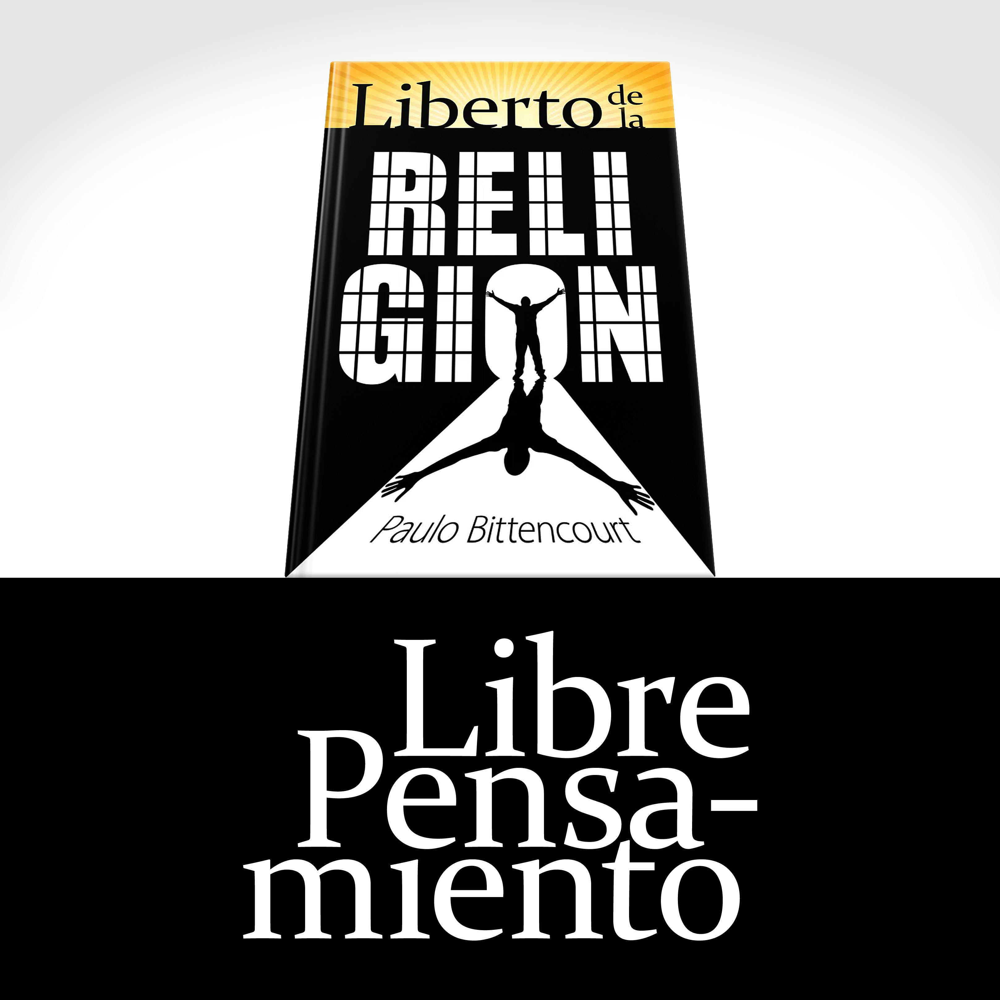

Propague el Libre Pensamiento
Dedico mi vida a, por todos los medios posibles, ayudar a personas a libertarse de la prisión religiosa.
“Quiero agradecer de corazón por los contenidos explanados en tus libros y videos. Ellos me ayudan a tener coraje de pensar y me dan embasamiento contra el engaño que sufrí desde mi infancia.”
“Estoy agradecido a ti, Paulo Bittencourt, por ayudarnos a, cada día, realizar la difícil tarea de dejar atrás la basura cultural que hemos heredado, abriendo nuestros ojos y oídos a las evidencias de la razón.”
¿Usted quiere que yo escriba más? ¿Quiere agradecerme por mi dedicación? Si usted valora la propagación del Libre Pensamiento, apoye mi lucha.
¡Muchas gracias!